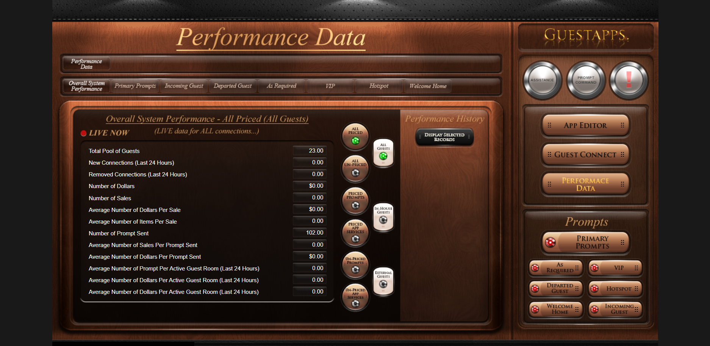

Guest AppMobile + full-stack platform
Guest App — Hospitality experience
Connected platform with Java/Spring Boot APIs, React/TypeScript administration and Flutter mobile application. Guest requests, messaging, notifications and hospitality workflows.
Client project · additional screens and walkthrough subject to permission.